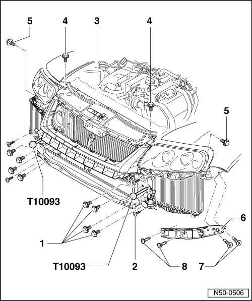
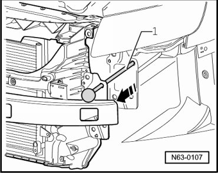
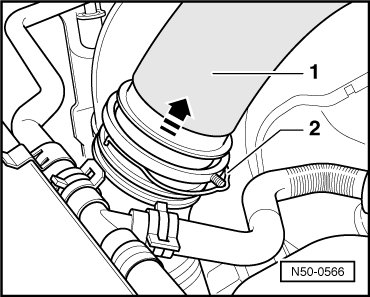

Lock Carrier Service Position
Lock Carrier
Lock Carrier Service Position

- Front bumper, vehicles through 10.2006, removing, refer to --> [ Bumper Cover ] Front Bumper, through 10.2006
- Front bumper, vehicles from 11.2006, removing, refer to --> [ Bumper Cover Assembly Overview ]
- Remove the wheel housing liner. Refer to --> [ Front Wheel Housing Liner Assembly Overview ] Service and Repair
- In vehicles with charge air cooler, disconnect pressure hoses.
- Loosen seal on lock carrier.
- Remove the left and right bolts - 7 - and - 8 - and remove the side guide profiles - 6 - from the fenders.
- Remove top bolts - 4 - on lock carrier.
- Remove bolts - 5 - on bracket for lock carrier.
- Remove the only one bolt - 1 - each on left and right longitudinal members.
- Screw in special tool guide rods (T 10093) at left and right.
- Remove remaining bolts - 1 - and - 2 - at longitudinal members.
- Lock carrier - 1 - can be pulled toward front approximately. 10 cm in direction of arrow on special tool guide rods (T 10093).

Service Position, Resetting
- When resetting the lock carrier, make sure the intake pipes - 1 - are properly seated on the air filters - 2 - near the wheel housing - arrow -.

To install, perform the steps used for removal in reverse order.
- Align lock carrier at longitudinal members and between fenders.
Vehicles with Charge Air Cooler
- Disengage connector coupling - 2 - and disconnect pressure hoses - 1 - upward in direction of arrow from coupling.
